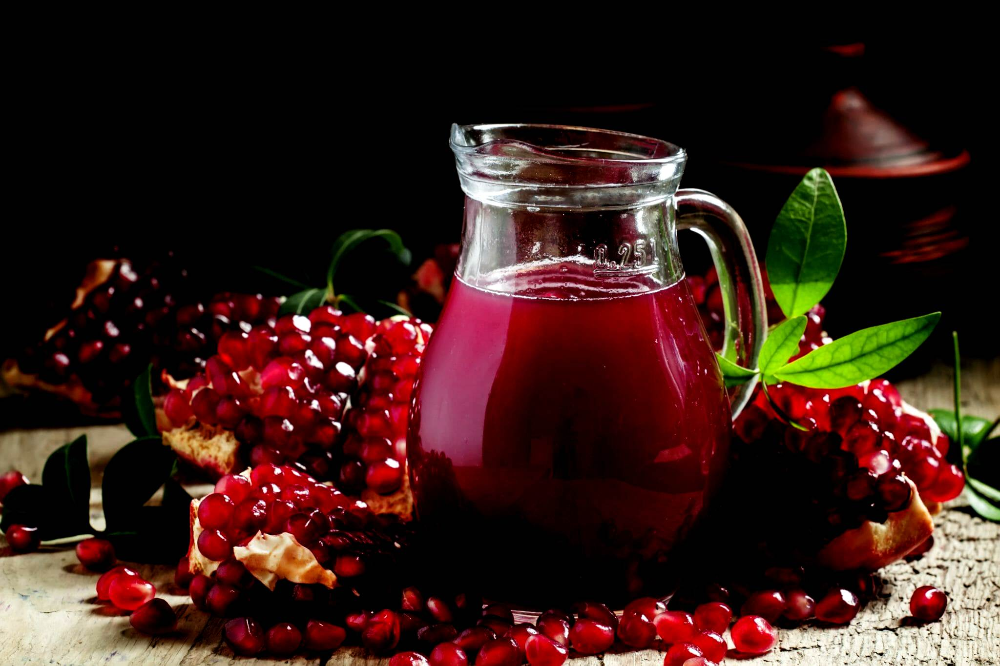
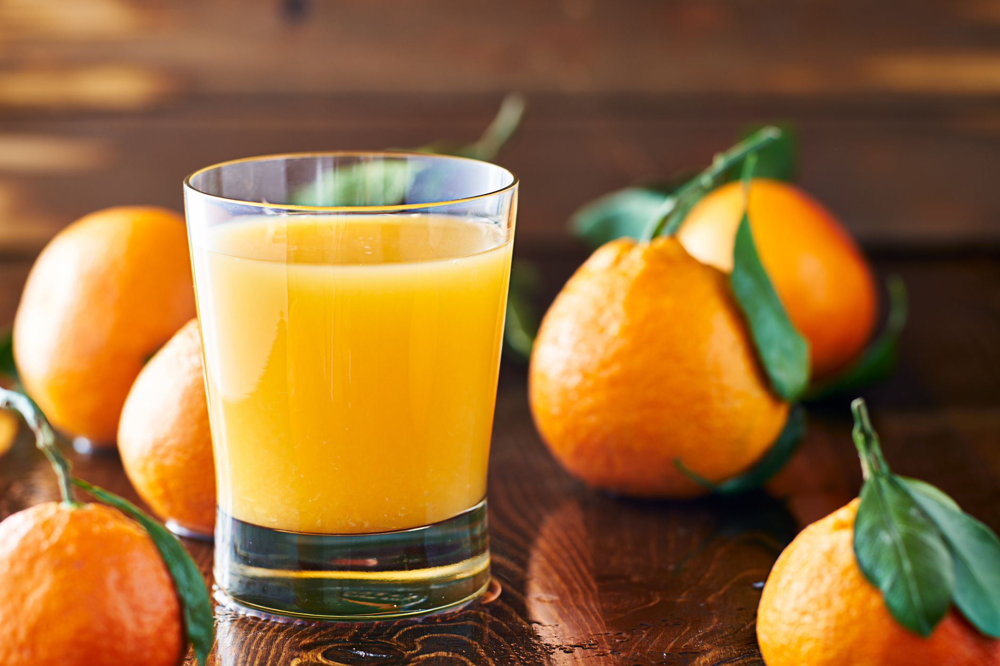

Apple juice
A 1-cup (240-ml) serving of apple juice provides (21Trusted Source):
Calories: 114
Protein: less than 1 gram
Carbs: 28 grams
Fiber: 0.5 grams
Sugar: 24 grams
Potassium: 5% of the DV
Vitamin C: 3% of the DV
Apple juice is a moderate source of potassium, a mineral that acts as an electrolyte and is important for nerve signaling and heart health (22Trusted Source, 23Trusted Source, 24).
Rs-250/-

Protein: less than 1 gram
Carbs: 33 grams
Fiber: 0.25 grams
Sugar: 32 grams
Potassium: 11% of the DV
Vitamin C: less than 1% of the DV
Vitamin K: 22% of the DV
Pomegranate juice is rich in vitamin K, which aids blood clotting, heart health, and bone development (36Trusted Source). It’s also high in the antioxidant anthocyanin, which gives pomegranates their characteristic dark-red color (37Trusted Source)
Promegranate
Protein: less than 1 gram
Carbs: 33 grams
Fiber: 0.25 grams
Sugar: 32 grams
Potassium: 11% of the DV
Vitamin C: less than 1% of the DV
Vitamin K: 22% of the DV
Pomegranate juice is rich in vitamin K, which aids blood clotting, heart health, and bone development (36Trusted Source). It’s also high in the antioxidant anthocyanin, which gives pomegranates their characteristic dark-red color (37Trusted Source)
Rs-300/-

A single cup (240 ml) of orange juice provides (45Trusted Source):
Calories: 112
Protein: 2 grams
Carbs: 26 grams
Fiber: 0.5 grams
Sugar: 21 grams
Folate: 19% of the DV
Potassium: 11% of the DV
Vitamin C: 138% of the DV
Orange juice is a significant source of vitamin C, an antioxidant that is essential for skin health
and iron absorption (6Trusted Source, 8Trusted Source).
It’s also high in phenolic compounds, such as cinnamic, ferulic, and chlorogenic acids. These antioxidant compounds help fight free radicals, which can damage cells and lead to disease (46).
Orange juice
A single cup (240 ml) of orange juice provides (45Trusted Source):
Calories: 112
Protein: 2 grams
Carbs: 26 grams
Fiber: 0.5 grams
Sugar: 21 grams
Folate: 19% of the DV
Potassium: 11% of the DV
Vitamin C: 138% of the DV
Orange juice is a significant source of vitamin C, an antioxidant that is essential for skin health
and iron absorption (6Trusted Source, 8Trusted Source).
It’s also high in phenolic compounds, such as cinnamic, ferulic, and chlorogenic acids. These antioxidant compounds help fight free radicals, which can damage cells and lead to disease (46).
Rs-450/-